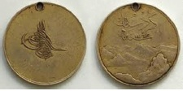

Bedirhan Bey liderliğindeki Kürt ayaklanmasını bastıran ve ayaklanma lideri ile yardımcılarını İstanbul’a getiren Müşir Osman Paşa’ya 1846 yılında dönemin padişahı Abdülmecit tarafından bir “Kürdistan Madalyası” takılmıştı. Dört çeşidi olan Kürdistan madalyasının ön yüzünde padişahın tuğrası, arka yüzünde de kabartma bir dağ dizisi vardı. Bu dağ kabartmasının üzerinde “Kürdistan”, altında da “sene 1263” yazıları vardı. Altın ve gümüş olarak bastırılan bu madalyalar ayaklanmanın bastırılması sırasında yararlılık gösterenlere rütbe sıralarına göre değerlendirip verilmişti.

Kürdistan Madalyası